Famous Dishes of West Malaysia
Selangor
Satay Kajang
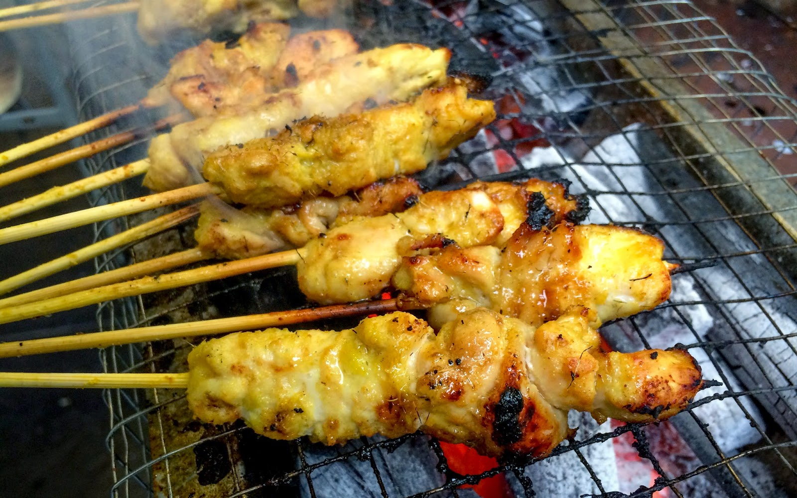Grilled meat skewers with peanut sauce.
Restoran Satay Putera Kajang
Address:
26 & 27, Jalan Mendaling, Bandar Kajang, 43000 Kajang, Selangor
Operating Hours:
Everyday: 11:30am-8pm except Monday
Bamboo Biryani
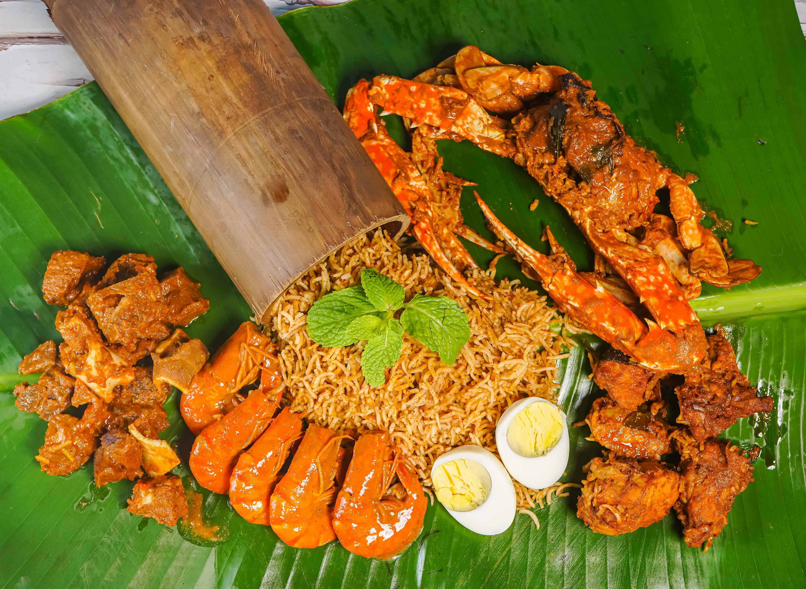Rice cooked in bamboo, infused with spices and served with meat.
Batang Kali Bamboo Briyani KL
Address:
No.J-G-8, BOULEVARD BUSINESS PARK, Jln Kuching, Taman Kok Lian, 51200 Kuala Lumpur, Wilayah Persekutuan Kuala Lumpur
Operating Hours:
Everyday: 10am-10pm
Banana Leaf Rice
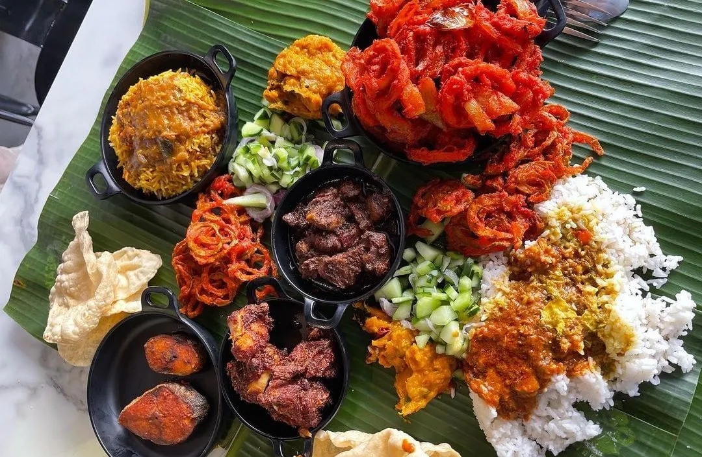Traditional Selangor meal served on a banana leaf.
Banana Leaf Restaurant
(Lotus Leaf Biryani)
Address:
18-1, Jalan 14/20, Seksyen 14, 46100 Petaling Jaya, Selangor
Operating Hours:
Everyday: 8am-8pm
Hokkien Mee
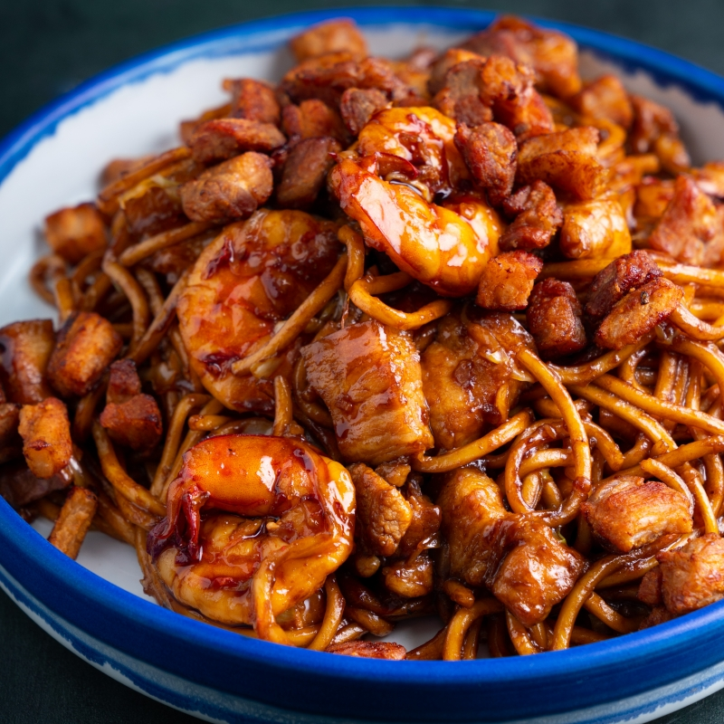Thick, savory noodles stir-fried with shrimp & pork.
Fried Noodles | Stall No.10 | Medan Selera Wawasan
Address:
Stall 10, Medan Selera Wawasan, 1, Jln. SS 3/33, Taman Universiti, 47301 Petaling Jaya, Selangor
Operating Hours:
Everyday: 7am-9pm
Bak Ku Teh
Pork rib soup with Chinese herbs & spices.
Yeoh's Bah Kut Teh 巴生福建会馆杨氏肉骨茶
Address:
Yeoh's Bah Kut Teh Hokkien Association Klang, Jalan Batu Tiga Lama, Kawasan 16, 41300 Klang, Selangor
Operating Hours:
Everyday: 8am-3:30pm
Perak
Ipoh Hor Fun
Flat rice noodles in broth with shrimp & veggies.
Restoran Tauge Ayam Lou Wong
Address:
49, Jalan Yau Tet Shin, Taman Jubilee, 30000 Ipoh, Perak
Operating Hours:
Everyday: 11am-9pm
Tau Fu Fa
Soft tofu dessert served in sweet syrup.
Funny Mountain Soya Beancurd
Address:
50, Jalan Mustapha Al-Bakri, Taman Jubilee, 30300 Ipoh, Perak
Operating Hours:
Everyday: 10:30am-7:30pm
Except Tuesday
Chicken Rice with Bean Sprouts
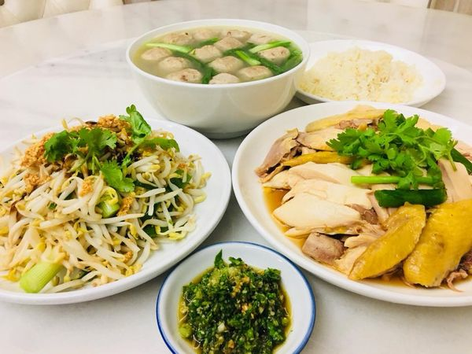Sliced chicken, rice, bean sprouts & soup.
Sam Ma Restaurant
Address:
3, Jalan S. A. Lingam, Taman Ipoh Selatan, 31400 Ipoh, Perak
Operating Hours:
Everyday: 11am-9pm
Except Wednesday
Salted Chicken
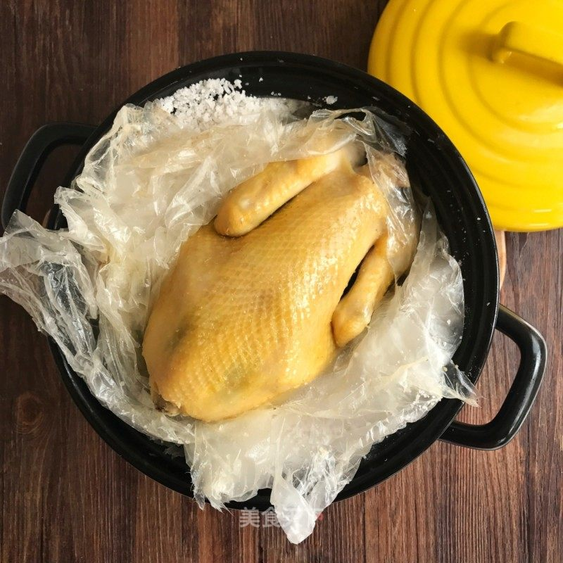Whole salt-baked or brined chicken.
Ayam Garam Aun Kheng Lim (Main Branch)
Address:
24, Jalan Theatre, Taman Jubilee, 30300 Ipoh, Perak
Operating Hours:
Everyday: 9am-6pm
Except Monday
Dim Sum
Assortment of steamed and fried dumplings.
Chooi Yue Dim Sum Ipoh
Address:
2, 4 & 6, Tingkat Taman Ipoh 12, Taman Ipoh Selatan, 31400 Ipoh, Perak
Operating Hours:
Everyday: 7am-1pm
Except Thursday
Penang
Penang Laksa
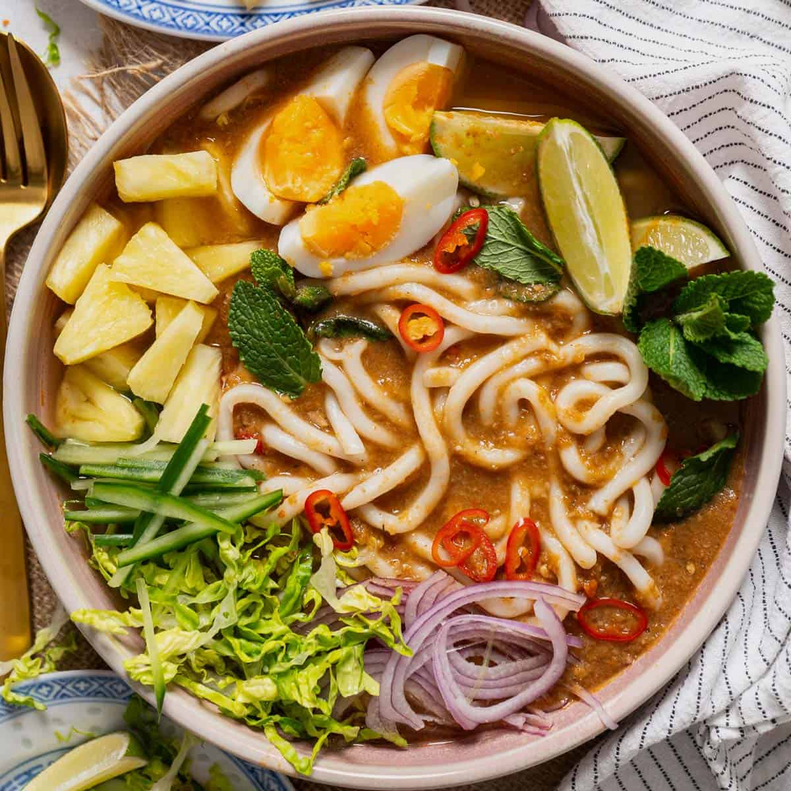Spicy-sour noodle soup with shrimp and coconut.
Penang Road Famous Laksa
Address:
5-7, Lebuh Keng Kwee, George Town, 10100 George Town, Pulau Pinang
Operating Hours:
Everyday: 9am-5:30pm
Except Wednesday
Char Kway Teow
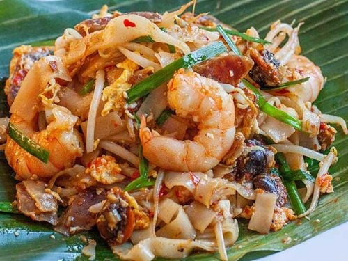Stir-fried rice noodles with prawns and veggies.
Presgrave Street Corner Heng Kee Char Koay Teow 三条路炒粿条
Address:
67D, Lebuh Presgrave, 10300 George Town, Pulau Pinang
Operating Hours:
Everyday: 4-9:30pm
Except Monday
Yam Rice
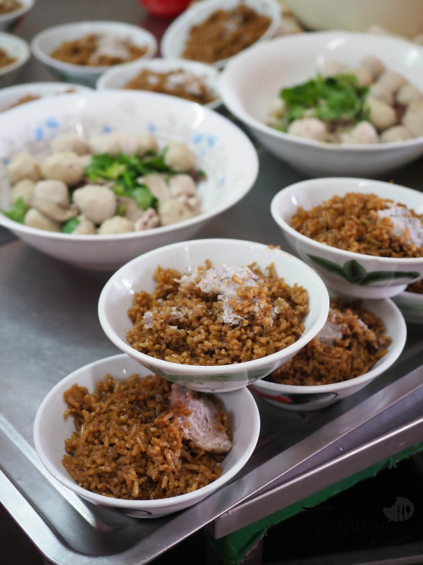Savory rice dish with steamed or fried yam pieces.
BM Famous Yam Rice
大山脚出名芋头饭 (Sentosa)
Address:
1, Jalan Sentosa, Taman Sentosa, 14000 Bukit Mertajam, Pulau Pinang
Operating Hours:
Everyday: 8am-3pm
Except Monday
Penang Hokkien Mee

Spicy noodle soup with shrimp, pork, and vegetables.
Restoran Old Green House
Address:
223, Jalan Burma, 10050 George Town, Pulau Pinang
Operating Hours:
Everyday: 3-11:45pm
Except Sunday
Braised Duck Porridge

Savory rice porridge made with shredded roasted duck.
Kimberley Street Duck Kway Chap
Address:
135, Lebuh Kimberley, George Town, 10100 George Town, Pulau Pinang
Operating Hours:
Everyday: 1-10:30pm
Except Thursday
Kedah
Chai Por Hu

Steamed fish topped with preserved radish (chai por) & spices in savory sauce.
SK KIM 新菜脯鱼
Restoran Chai Por Hu
Address:
238A Medan Putra Seberang, Jln Tunku Abdul Rahman Putra, 05150 Alor Setar, Kedah
Operating Hours:
Everyday: 8am-3pm
Except Tuesday
Crab Noodles

A delicious blend of fresh crab meat and flavorful noodles
蟹肉油面
Address:
10c, Jalan Pekan Simpang Kuala, Pekan Simpang Kuala, 05400 Alor Setar, Kedah
Operating Hours:
Everyday: 7:30am-3pm
Except Tuesday, Wednesday & Saturday
Kuih Bunga Pudak
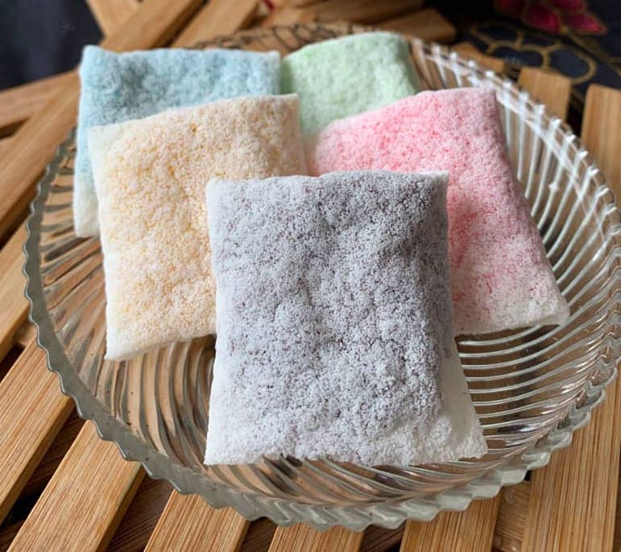A floral-shaped & chewy dessert made with glutinous rice flour & sweet coconut filling.
Pekan Rabu Complex
Address:
Bandar Alor Setar, 05000 Alor Setar, Kedah
Operating Hours:
Everyday
Pekasam Ikan Puyu
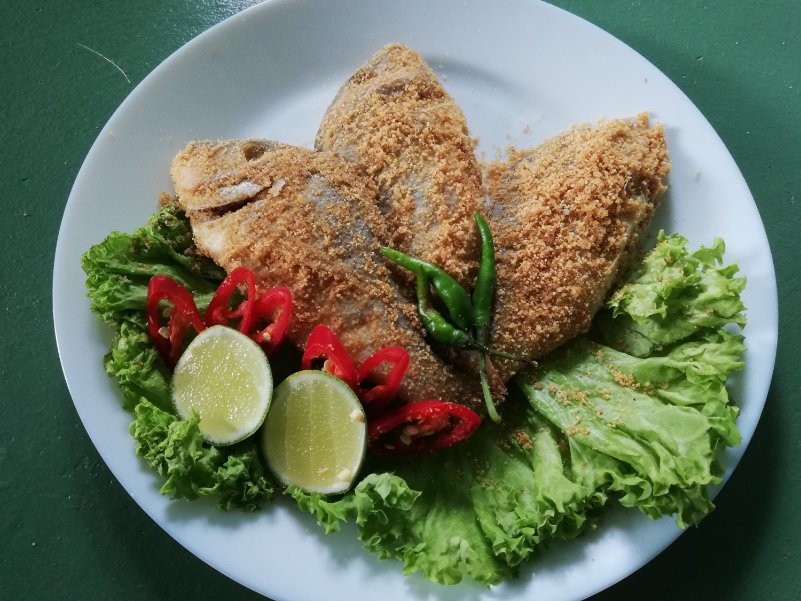The fish is marinated in rice, salt, and tamarind, giving it a unique sour and savory taste.
Pekasam Kakmah
Address:
No.34, Jalan Kampung Kuar, Alor Pudak, 06500 Alor Setar, Kedah
Operating Hours:
Everyday: 3-11:45pm
Except Sunday
Nasi Ulam

A traditional rice dish mixed with finely chopped herbs and vegetables.
Restoran Ulam
Address:
Shahab Perdana, 05150 Alor Setar, Kedah
Operating Hours:
Everyday: 10am-5pm
Except Friday
Kelantan
Nasi Kerabu

A blue rice dish served with fresh herbs, dried fish or fried chicken, and sambals.
Kak Dah Nasi Kerabu Hutan Kampung
Address:
No 19 Aras Lantai, Komplek, Perniagaan Hidayah, Jalan Hutan Kampung, Kampung Hutan Pulai, 05350 Alor Setar, Kedah
Operating Hours:
Everyday: 7:30am-4pm
Nasi Dagang

Aromatic rice cooked in coconut milk, served with a rich, flavorful fish curry (usually tuna) and pickled vegetables.
Nasi Dagang Warisan
Address:
Nasi Dagang Warisan, 16150 Kota Bharu, Kelantan
Operating Hours:
Everyday: 7am-12pm
Laksam
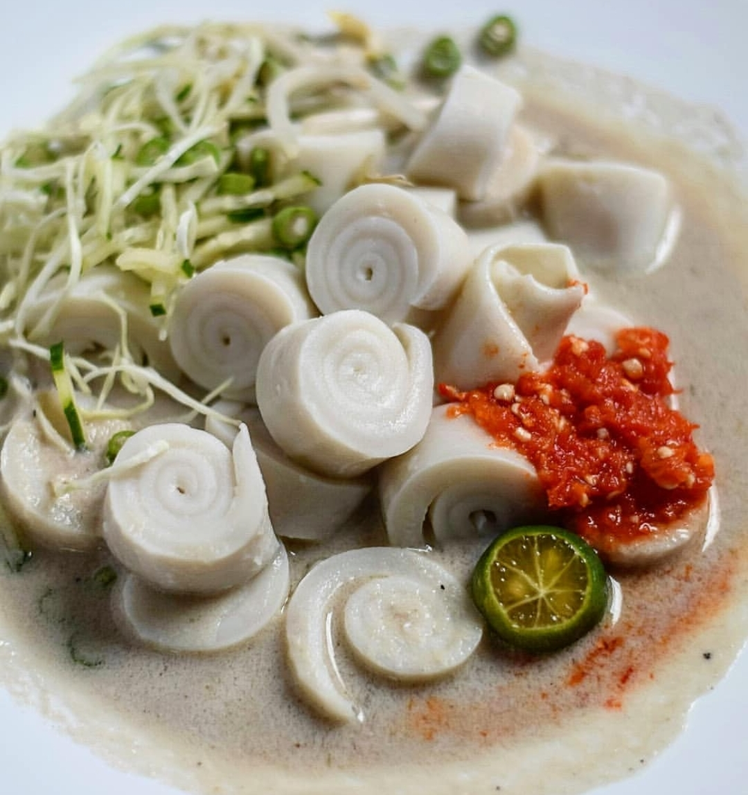A type of laksa with thick, rolled rice noodles served in a rich, creamy fish gravy.
Kedai Laksam Mok Cik Ana
Address:
Kampung Bukit Jering, 17610 Jeli, Kelantan
Operating Hours:
Everyday: 5-11:30pm
Kuih Akok
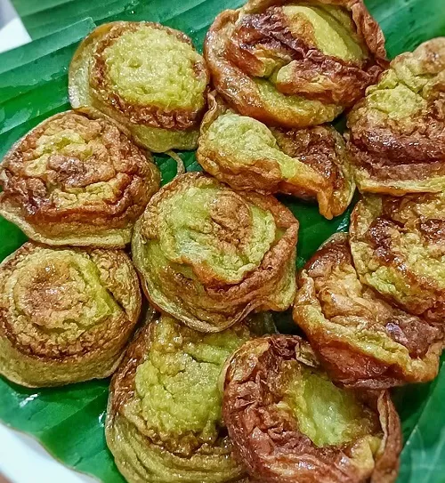A traditional sweet snack made from eggs, coconut milk, and brown sugar, with a soft, custard-like texture.
Kedai Akok& Bahulu Tradisional
Address:
Kampung Chegar Bedil, 17600 Jeli, Kelantan
Operating Hours:
Everyday: 9am-7pm
Lompat Tikam

Layers of sweetened coconut milk and glutinous rice, often served in vibrant colors.
Kak Yah Lompat Tikam
Address:
Jalan Kampung Rupek, Taman Desa Tiong, 15150 Kota Bharu, Kelantan
Operating Hours:
Everyday: 7:30am-5pm
Except Monday
Terengganu
Keropok Lekor

Deep-fried fish crackers made from fish paste and sago flour.
Keropok Warisan Losong
Address:
74, Jalan Kuala Hiliran, Kampung Losong Haji Su, 21000 Kuala Terengganu, Terengganu
Operating Hours:
Everyday: 8am-8pm
Except Friday
Ketupat Sotong

Squid stuffed with glutinous rice and cooked in a spicy, flavorful sauce.
Warung Ketupat Sutong
Address:
T145, kampung mengabang telipot, 21030 Kuala Terengganu, Terengganu
Operating Hours:
Everyday: 11:50am-6pm
Kuih Bronok

A sweet, steamed dessert made from glutinous rice flour and coconut, often shaped into small, round cakes.
Bazar Kuih Tradisional Gong Kapas
Address:
Jalan Panji Alam, 21100 Kuala Terengganu, Terengganu
Operating Hours:
Everyday: 12-7pm
Bubur Lambuk

A savory porridge made with rice, meat (usually beef or chicken), and spices.
TokTeh Bubur Lambuk - Sayur Banyok
Address:
Kampung Pak Tuyu, 21030 Kuala Terengganu, Terengganu
Operating Hours:
Everyday
Nasi Minyak Terengganu

A fragrant rice dish cooked with ghee (clarified butter) and spices.
Nasi Minyak Atas Gong
Address:
3, 20400 Kuala Terengganu, Terengganu
Operating Hours:
Everyday: 6:30am-3pm
Except Monday
Pahang
Bentong Durian
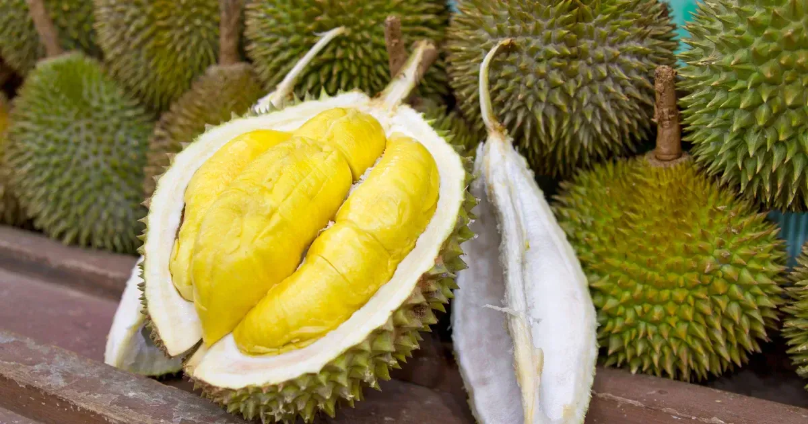A renowned Malaysian durian variety from Bentong.
Bentong Durians
文冬榴莲园
Address:
Jalan Kuala Lumpur, Lama, 28700 Bentong, Pahang
Operating Hours:
Everyday: 10am-5pm
Royal Pudding

Served in various settings and is enjoyed for its creamy and custard-like qualities.
Royal Pudding
Address:
Jalan Haji Abdul Aziz, 25000 Kuantan, Pahang
Operating Hours:
Everyday
Patin Tempoyak

The Patin fish cooked in a creamy & fermented durian paste.
Akob Patin House
Address:
A2, Lorong Haji Abdul Rahman 1, 25000 Kuantan, Pahang
Operating Hours:
Everyday: 8:30am-6pm
Except Sunday
Nasi Kebuli

A spiced rice dish with meat, nuts, and raisins, influenced by Middle Eastern flavors.
Restoran Lepeh
Address:
No. B-4, Tingkat bawah, 1, Lorong Kempadang Maju 11, Perkampungan Kempadang Maju, 26060 Kuantan, Pahang
Operating Hours:
Everyday
Gulai Asam Rong

A sour curry made with fish, tamarind, and various spices.
Kak Noor Gulai Asam Rom
Address:
Jalan Bidai, Kampung Sungai Jan, 27000 Jerantut, Pahang
Operating Hours:
Everyday
Johor
Tomato Wantan Mee

A noodle dish from Johor with a tangy tomato sauce, wantan (dumplings), and topped with char siu (barbecued pork).
Heng Heng Original Tomato Wanton Mee
Address:
766, Lorong Anggerik, Kampung Parit Mesjid, 82000 Pontian, Johor
Operating Hours:
Everyday: 9:30am-2:30pm
Except Friday
Mee Rebus Johor
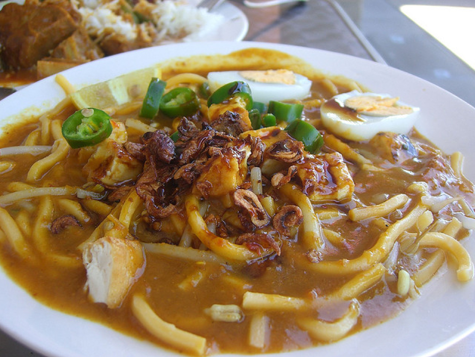Noodles in a spicy, savory gravy made from potatoes and shrimp paste.
Mee Rebus Idaman
Address:
12, Jalan Susur Idaman, Taman Nusa Idaman, 79100 Iskandar Puteri, Johor
Operating Hours:
Everyday: 12-10pm
Except Tuesday
Kway Chap
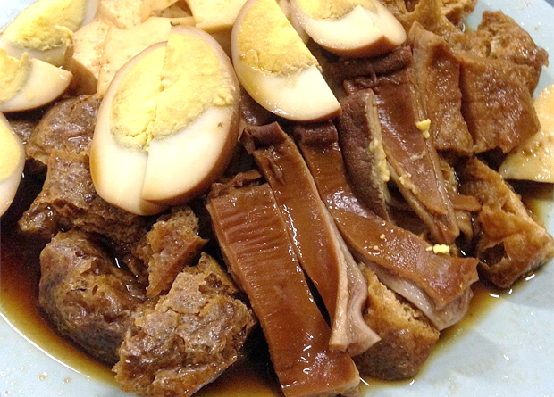A flavorful noodle soup with flat rice noodles and braised pork served in a savory soy-based broth.
San Lou Kway Teow Kia 三楼粿條仔
Address:
Jalan Biru, Kampung Stulang Darat, 80300 Johor Bahru, Johor
Operating Hours:
Everyday: 1-9pm
Except Monday
Kacang Pool Haji

A hearty dish of spiced fava beans in a creamy sauce, served with toasted bread and topped with minced meat and a hard-boiled egg.
Restoran Kacang Pool Haji
Address:
14, Jalan Garuda, Larkin, 80350 Johor Bahru, Johor
Operating Hours:
Everyday: 7am-6pm
Lontong Kering Johor

A dry version of lontong, featuring compressed rice cakes served with a rich & spicy mix of vegetables.
Pondok Santapan Larkin
Address:
Pondok Santapan Larkin
Operating Hours:
Everyday: 7am-12pm
Except Friday
Malacca
Chicken Rice Balls
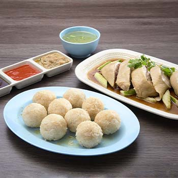A classic chicken rice, where the rice is shaped into balls and served with poached chicken and chili sauce.
Jonker Chicken Rice Ball
Address:
15 & 17, Lorong Hang Jebat, 75200 Melaka
Operating Hours:
Everyday: 11am-8:30pm
Chendol
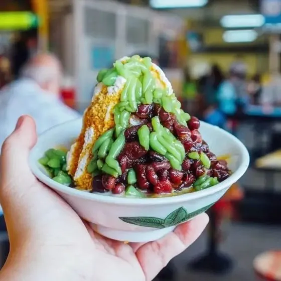A refreshing dessert made with shaved ice, coconut milk, palm sugar syrup, and green jelly noodles.
Cendol Kampung Hulu
Address:
26, Jalan Kampung Hulu, Kampung Hulu, 75200 Melaka
Operating Hours:
Everyday: 11am-10:30pm
Coconut Shake

A creamy, refreshing drink made by blending coconut with ice cream and milk.
Coconut Shake Batu Berendam
Address:
No. 7-1, No.5, Tingkat Bawah, 7-2, Jalan Kanan 1, Taman Ria, 75350 Batu Berendam, Melaka
Operating Hours:
Everyday: 9:30am-10:30pm
Satay Celup

Skewers of meat and vegetables dipped into a pot of boiling satay sauce.
Satay Celup 律律
Address:
22, Jalan Tun Perak, Kampung Enam, 75300 Melaka
Operating Hours:
Everyday: 7:30-10:30pm
Nyonya Laksa

A spicy noodle soup with a rich coconut-based broth, often including shrimp, chicken, and bean sprouts.
d’LEETcious Nyonya Laksa Empire
Address:
2, Jalan KL 3/13, Seksyen 3, Taman Kota Laksamana, 75200 Melaka
Operating Hours:
Everyday: 8:30am-3pm
Except Wednesday
Negeri Sembilan
Siew Pau

A Cantonese-style baked bun filled with savory barbecue pork/chicken.
Empayar Seremban Siew Pow
芙蓉烧包城
Address:
Lower Ground, LG1-57, Jalan Besar TBK 4, Pasar Besar, Taman Bukit Kepayang, 70200 Seremban, Negeri Sembilan
Operating Hours:
Everyday: 9:30am–9:30pm
Mihun Sotong

A dish featuring mihun stir-fried with squid (sotong) in a savory with vegetables and herbs.
Hioong Kee Mee Hoon Sotong
Address:
Stall 753, Jalan Pasar, Bandar Seremban, 70000 Seremban, Negeri Sembilan
Operating Hours:
Everyday: 5:30am–12pm
Except Monday & Tuesday
Scallop Fish Ball Noodles

Noodles served with fish balls made from fish paste and scallops.
Gerai Fah Kee
Address:
No.37, Medan Selera MPS Stall, 164, Jalan Lee Sam, Bandar Seremban, 70000 Seremban, Negeri Sembilan
Operating Hours:
Everyday: 9am–2:30pm
Except Thursday
姨婆老鼠粉
(Yi Po Lao Shu Fen)

A chewy rice noodles in a savory sauce with ingredients like minced pork and vegetables.
Yi Poh 姨婆老鼠粉 (HQ Seremban)
Address:
52, Jalan Seng Meng Lee, Seremban, 70200 Seremban, Negeri Sembilan
Operating Hours:
Everyday: 7:30am–9pm
Grilled Crab

Crab grilled over an open flame or on a barbecue, typically seasoned with a variety of spices.
Restoran Seremban Seafood Village
Address:
No 3720, Jalan Tuanku Munawir, Tuanku Manuwir, 70000 Seremban, Negeri Sembilan
Operating Hours:
Everyday: 11am–11pm
Perlis
Harum Manis Perlis

Ripe mangoes known for their sweet and aromatic flavor.
SC Harum Manis Perlis
Address:
Batu 2, Jalan Pauh, 02600 Arau, Perlis
Operating Hours:
Open 24 hours
Pulut Mempelam

A traditional Malaysian dessert made from glutinous rice (pulut) served with ripe mango (mempelam) and a drizzle of coconut milk.
Ngulang Kopitiam
Address:
410, Jalan Jejawi-Tok Kayaman, 01000 Kangar, Perlis
Operating Hours:
Everyday: 8am-3pm
Except Wednesday
Ikan Bakar

Fish marinated in a blend of spices and herbs, then grilled to perfection.
Restoran Muslim Ikan Bakar & Tomyam
Address:
20, Jalan Besar, Pekan Kuala Perlis, 02000 Kuala Perlis, Perlis
Operating Hours:
Everyday: 6pm-3am
Lokching
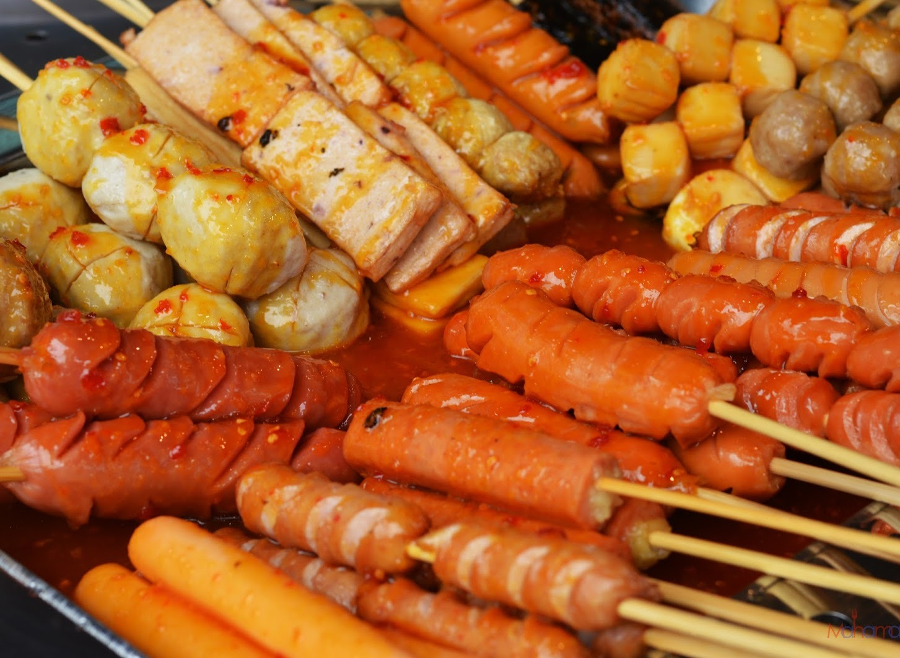Lokching basically a process meat that are shaped into variety of color, shape and flavour.
Lokching bakar seringgit
Address:
C46F+FH, 02000 Kuala Perlis, Perlis
Operating Hours:
Everyday
Figs
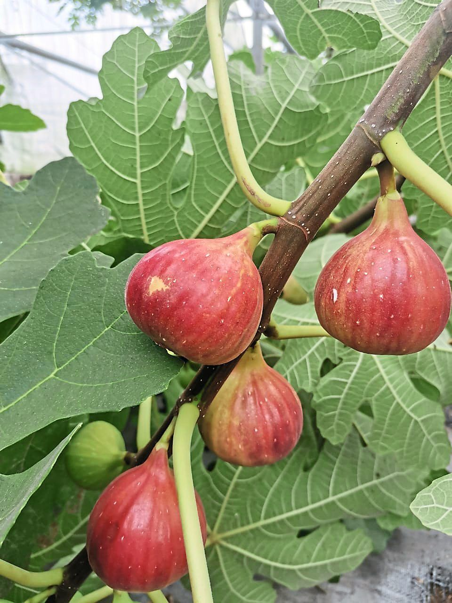Figs are a sweet, soft fruit with a chewy texture and small seeds, enjoyed fresh or dried in various dishes and desserts.
Superfruits Valley
Address:
02450 Padang Besar, Perlis
Operating Hours:
Everyday: 8am-4pm
Sabah
Linopot
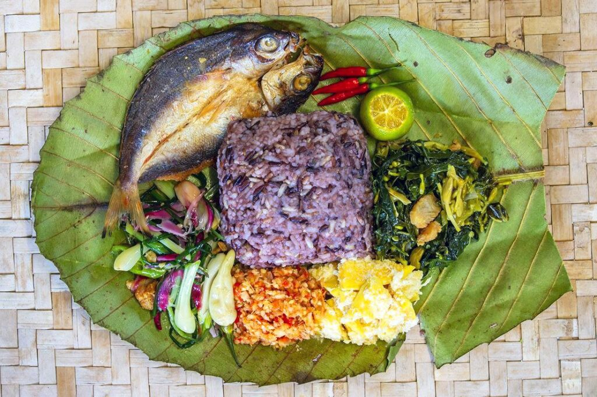A traditional Kadazan-Dusun dish of rice mixed with tubers like sweet potatoes or yam, wrapped in leaves.
THE NATIVE CAFE
Address:
THE NATIVE CAFE (Inside Hotel N5) , HOTEL N5 1 JALAN PINTAS, PENAMPANG PENAMPANG, 88300 Kota Kinabalu, Sabah
Operating Hours:
6:30am-10:30pm
Tuaran Mee

A special noodle dish from the town of Tuaran, featuring egg noodles stir-fried with eggs and topped with slices of roasted meat.
Tuaran Mee Restaurant
Address:
mile 6, Jalan Tuaran, Inanam, 88450 Kota Kinabalu, Sabah, Jalan Tuaran, Inanam, 88450 Kota Kinabalu, Sabah
Operating Hours:
Everyday: 7am-4pm
Except Monday
Hinava
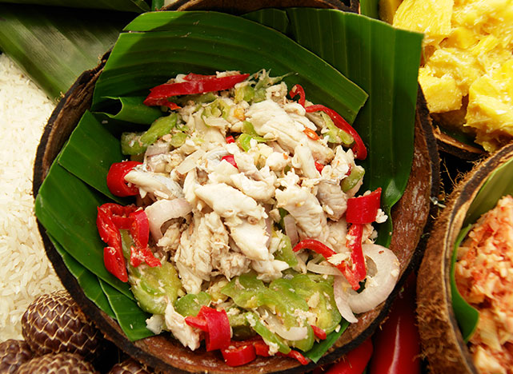A traditional Kadazan-Dusun dish made from raw fish marinated in lime juice, ginger, chilies, and more.
NK Restaurant & Catering (Halal Food)
Address:
Grd Floor, Lot 18, No.3, Karamunsing Godown, Sadong Jaya, 88000 Kota Kinabalu, Sabah
Operating Hours:
Everyday: 6am-8pm
Ambuyat
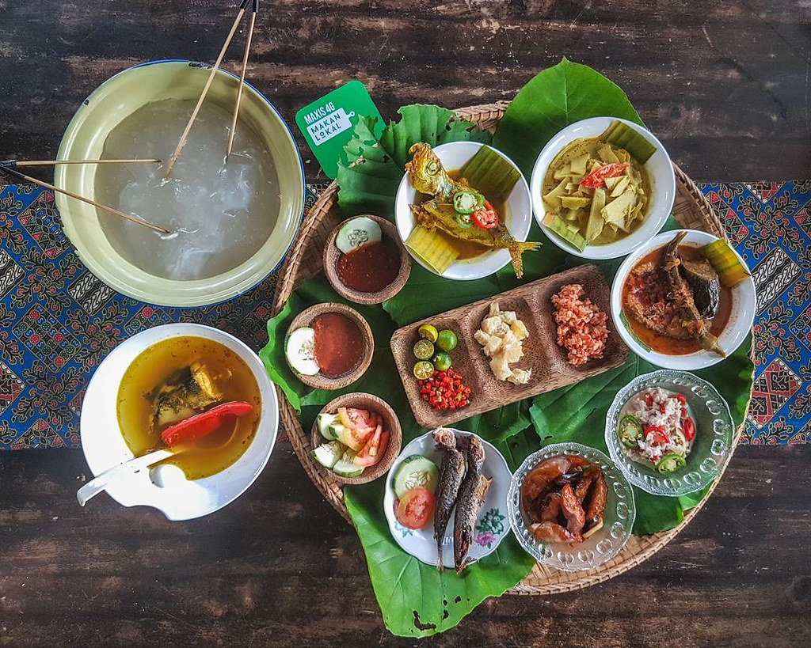A sago-based dish with a variety of side dishes and sauces.
Asiarasa Cafe Citarasa Kampung
Address:
D-0-3, Lorong Capital, Sabah, 88400 Kota Kinabalu
Operating Hours:
Everyday: 9:30am-6pm
Except Sunday
Pork Noodles

Thin egg noodles served in a savory broth with slices of raw or lightly cooked pork.
KK Wang Xiang Noodle
亚庇 万香生肉面
Address:
Shophouse, Lot1, Jalan Kolam, Taman Foh Sang, 88300 Kota Kinabalu, Sabah
Operating Hours:
Open 24 hours
Sarawak
Sarawak Laksa

A spicy noodle soup with a coconut milk base, served with rice vermicelli, prawns, chicken, and garnished with fresh lime.
126 Laksa
Address:
Jalan Chan Chin Ann, 93100 Kuching, Sarawak
Operating Hours:
Everday: 7am-9pm
Kolo Mee

A popular dry noodle dish, usually topped with minced pork, char siu (barbecue pork), and spring onions.
Kolo mee Red
Address:
MY Sarawak Kuching Jalan Power Tower Market Hawker Center Stall No 29, 93000
Operating Hours:
Everyday: 5-11pm
Ayam Pansuh

A traditional Iban dish where chicken is cooked with lemongrass, ginger, and tapioca leaves inside bamboo.
Lepau Restaurant
Address:
99, Jalan Ban Hock, 93100 Kuching, Sarawak
Operating Hours:
Everyday: 11am-2pm 6-10pm
Except Sunday
Umai
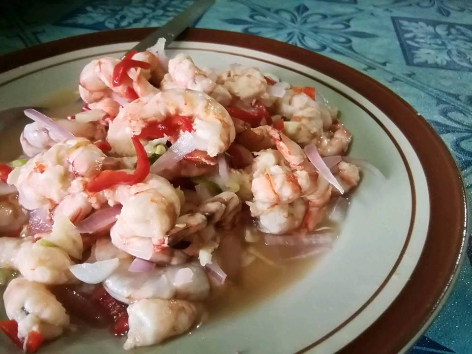A Melanau dish consisting of raw fish marinated in lime juice, chili, onions, and other spices.
Topspot Food Court
Address:
off, Jln Padungan, 93100 Kuching, Sarawak
Operating Hours:
Everyday: 5-10pm
Midin
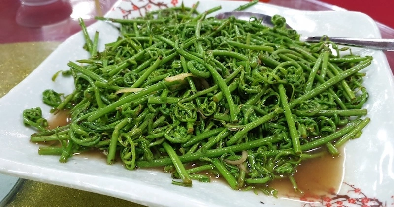A wild fern that is stir-fried with garlic, belacan (shrimp paste), or dried shrimp.
Rumah Asap Tabuan Dayak
Address:
Jalan Tabuan Dayak, Tabuan Dayak, 93250 Kuching, Sarawak
Operating Hours:
Everyday: 4pm-12am